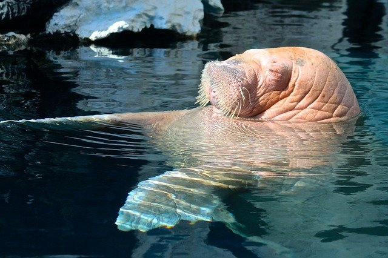
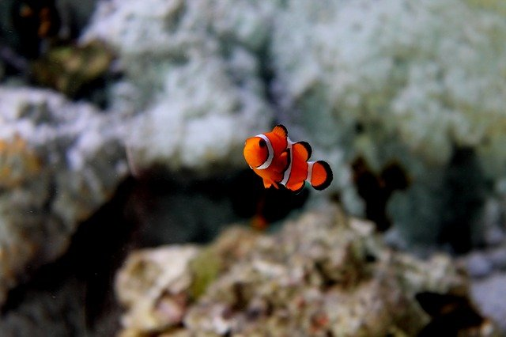

MORSKA KRAINA

FOKA FRANIA
Nasza najmłodsza podpieczna. Uwielbia zabawy z piłką oraz zjeść jakąś dobrą rybkę.
Frania uwielbia być w centrum uwagi, więc gdy zwróci na siebie uwagę przechodniów cały czas się popisuje!

DELFIN MATI
Mati to niezwykle inteligenty delfin!
Skakanie przez obręcze? Podbijanie piłki? Dla niego to chleb powszedni...
Można by rzec, że czuje się jak ryba w wodzie!

MORS ZENEK
Nasz Zenek jest nieco leniwy, ale to dobry mors!
Lubi trochę się poopalać, coś zjeść i znowu do wody.
I tak to życie się kręci :)

RYBKA NEMO
Nemo, Nemo... Gdzie jest Nemo?
A no tak, ciągle u nas ! Nemo zbyt wiele nam nie mówi, ale chyba wygląda na szczęśliwego.